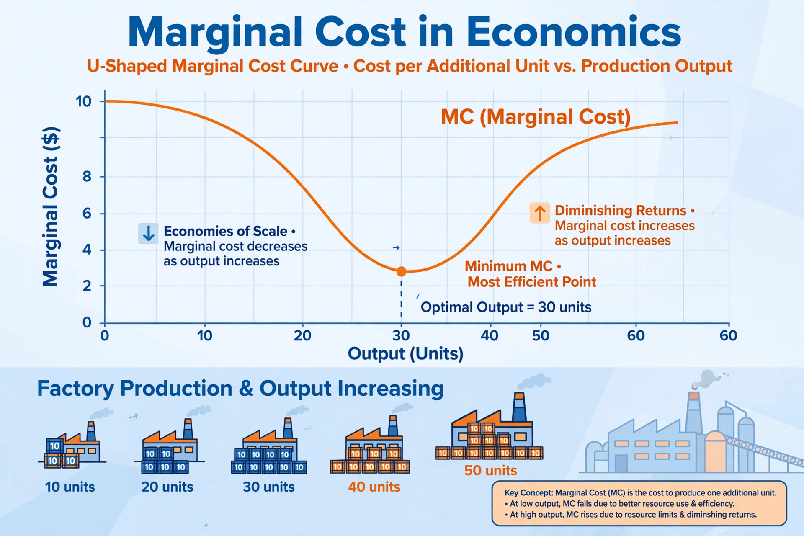

In economics, marginal cost is the change in total cost that arises when the quantity produced increases by one unit — the cost of producing one more unit of a good or service.

| Field | Microeconomics |
|---|---|
| Formula | MC = ΔTC / ΔQ |
Marginal cost typically falls at first due to increasing returns, then rises under diminishing marginal returns, giving a U-shaped curve. Profit-maximising firms in competitive markets produce where price equals marginal cost.
Setting price equal to marginal cost is allocatively efficient, but for natural monopolies with high fixed costs it may not cover total costs, prompting regulation or subsidies.